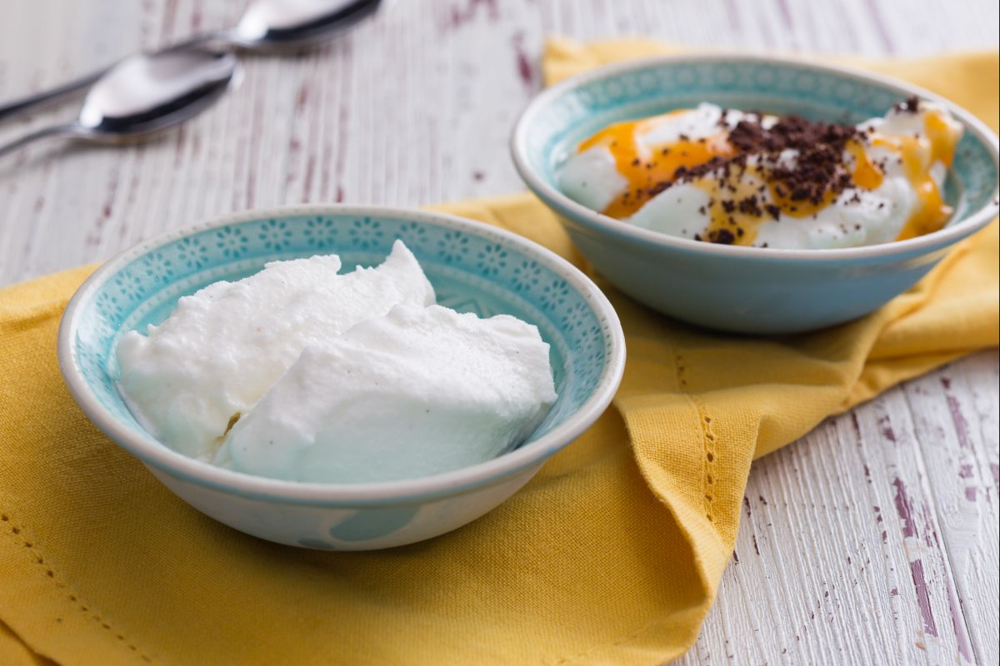

Fiordilatte Ice Cream

Description:
The most classic ice cream and the easiest to prepare at home is certainly fiordilatte ice cream. With its creamy texture and delicate taste it goes well with all other flavors, such as chocolate and fruit.
It is irresistible even in winter, maybe with warm zabaione (egg cream), with marron glacé or with nougat crumbs at Christmas time!
Ingredients:
- Whole milk 1 quart (1 l)
- Heavy cream ¾ cup (190 g) - cold
- Sugar 1 cup (230 g)
- Vanilla bean 1
- Carob powder ½ tsp (2.5 g)
Steps:
- To prepare the fiordilatte ice cream, first pour the milk into a small pot 1 and place over a moderate heat. In the meantime, cut the vanilla bean and scrape off the seeds, add them to the milk.
- Mix from time to time to prevent the milk from sticking to the bottom and let it reach the boiling point.In the meantime, combine sugar and carob powder in a bowl; mix until they are well blended, without lumps.
- As soon as the milk starts to boil, take it off the heat and while whisking continuously add the powder mixture very slowly; this way you will avoid the formation of lumps. When the mixture is well blended, return the pot to the heat and simmer, stirring well and continuously.
- At the first signs of boiling, move the pot into a fairly large bowl filled with water and ice. Keep stirring with the whisk. This will allow the temperature to drop rapidly and you will be able to reduce the bacterial load that develops between 140°F (60°C) and 70°F (30°C). As soon as the temperature drops below 70°F (30°C) you can add the cold cream. Keep stirring with the whisk to combine it.
- The base is now ready, cover the pot with plastic wrap and refrigerate for 4 to 12 hours. Take the pot out of the refrigerator and stir with a whisk, as the sugars may settle on the bottom and the fat may rise to the surface. Now, depending on your ice cream maker, take the required amount of mixture, pour it inside the machine and turn it on.
- The churning will last about 40-50 minutes, which may vary depending on the machine used. The rest of the mixture can be stored in the refrigerator to be churned later. As soon as the mixture has reached a creamy consistency you can switch off the machine.If you want to taste it immediately using two dampened spoons, take the single portions "quenelle" style with the help of two spoons and fill the various cups. Serve the ice cream quickly, otherwise you can freeze it in an airtight storage container, though it will be less creamy.